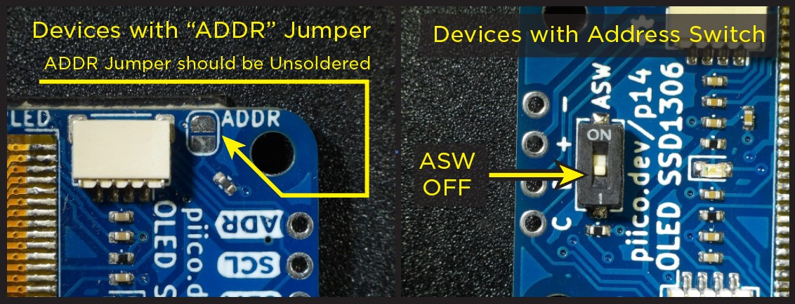

PiicoDev OLED Module¶
The PiicoDev OLED Display Module is perfect for adding a graphical display to your project. The monochrome white-on-black display provides a sharp image and fits a surprising amount of detail. Use this module to display text, draw shapes, animations, and even create plots.
Getting set up¶
Connect the PiicoDev module to your Micro:bit¶
Plug your Micro:bit into the PiicoDev adapter (buttons LED matrix facing up), connect your module to the adapter via the PiicoDev cable and connect your Micro:bit to your computer with a USB lead.
Make sure that the ASW switch is in the off position (see below)

Download the PiicoDev Modules¶
Create a new folder for this example. Then download the following files and save them to your new folder (Right Click > “Save Link As”).
PiicoDev_SSD1306.py- The device driver.PiicoDev_Unified.py- The PiicoDev Unified Libraries: Drives I2C communications for PiicoDev modulesfont-pet-me-128.dat- The font filepiicodev-logo.pbm- PiicoDev Test Image
Examples¶
The PiicoDev OLED Module screen has 128 pixels x 64 pixels, with the (0,0) coordinate in the top lefthand corner.
Line¶
There are several options for drawing simple lines.
line(x1, y1, x2, y2, c)will draw a two-point line from(x1,y1)to(x2,y2)of colourc.hline(x, y, l, c)will draw a horizontal line from(x, y)of lengthl, colourc. Always draws left-to-right.vline(x, y, l, c)will draw a verticle line from(x, y)of lengthl, colourc. Always draws left-to-right.
The following example draws horizontal and vertical lines from the same point and joins their ends with a two-point line. There is a small delay between the drawing of each line.
Create a main.py file in the folder and add the code below.
Upload main.py along with PiicoDev_Unified.py, PiicoDev_SSD1306.py, font-pet-me-128.dat and piicodev-logo.pbm to the micro:bit and then run it.
1# line example
2
3from PiicoDev_SSD1306 import *
4from PiicoDev_Unified import sleep_ms # cross-platform compatible sleep function
5
6display = create_PiicoDev_SSD1306()
7
8display.hline(10,10, 80, 1) # horizontal line 80px long from (10,10)
9display.show()
10sleep_ms(500)
11
12display.vline(10,10, 35, 1) # vertical line 35px long from (10,10)
13display.show()
14sleep_ms(500)
15
16display.line(10,45, 90,10, 1) # two-point line from (10,45) to (90,10)
17display.show()
18sleep_ms(500)
Rectangle¶
Draw an unfilled rectangle with rect(x,y,width,height,colour)
The top-left corner is specified by x and y. width and height set the width and height in pixels. colour sets the line colour as 1 (white) or 0 (black)
The following example draws an unfilled rectangle to the left of the display, and a filled white rectangle to the right. A filled black rectangle is then drawn over the top.
Change the code in main.py to the code below.
Upload main.py along with PiicoDev_Unified.py, PiicoDev_SSD1306.py, font-pet-me-128.dat and piicodev-logo.pbm to the micro:bit and then run it.
1from microbit import *
2from PiicoDev_SSD1306 import *
3
4# --- SETUP
5# start sensors
6oled = create_PiicoDev_SSD1306()
7
8# store variables
9unfilled_x = 10
10unfilled_y = 10
11unfilled_width = 20
12unfilled_height = 50
13unfilled_colour = 1
14
15white_filled_x = 50
16white_filled_y = 10
17white_filled_width = 50
18white_filled_height = 40
19white_filled_colour = 1
20
21black_filled_x = 60
22black_filled_y = 20
23black_filled_width = 30
24black_filled_height = 20
25black_filled_colour = 0
26
27# --- RUNNING
28while True:
29 # read sensor data
30
31 # process data
32
33 # output data
34 # unfilled rectangle
35 oled.rect(unfilled_x, unfilled_y, unfilled_width, unfilled_height, unfilled_colour)
36
37 # filled rectangle (white)
38 oled.fill_rect(white_filled_x, white_filled_y, white_filled_width, white_filled_height, white_filled_colour)
39
40 # filled rectangle (black)
41 oled.fill_rect(black_filled_x, black_filled_y, black_filled_width, black_filled_height, black_filled_colour)
42
43 oled.show()
44 sleep(3000)
45
46 # clear screen
47 oled.fill(0)
48 oled.show()
49
50
Text¶
Display alphanumeric text with text(string, x, y, colour), where;
stringis a python stringx,yare the top-left co-ordinatescolouris1(white) or0(black)
The following example prints four lines. The first is a literal string, where the text to be printed is inserted into the function call. The second prints a string variable myString. The third and fourth print the value stored in a variable.
Change the code in main.py to the code below.
Upload main.py along with PiicoDev_Unified.py, PiicoDev_SSD1306.py, font-pet-me-128.dat and piicodev-logo.pbm to the micro:bit and then run it.
1from microbit import *
2from PiicoDev_SSD1306 import *
3
4# --- SETUP
5# start sensors
6oled = create_PiicoDev_SSD1306()
7
8# store variables
9myString = "this is me"
10myNumber = 123.4567
11
12# --- RUNNING
13while True:
14 # read sensor data
15
16 # process data
17
18 # output data
19 # display literal string
20 oled.text("Hello, World!", 0,0, 1)
21
22 # display string variable
23 oled.text(myString, 0,15, 1)
24
25 # display litereal number
26 oled.text(str(100), 0, 30)
27
28 # display number variable
29 oled.text(str(myNumber), 0, 45)
30
31 oled.show()
32 sleep(3000)
33
34 # clear screen
35 oled.fill(0)
36 oled.show()
37
38
Graph¶
Graphs are created with the graph2D() function allows plotting a single variable as it changes over time. The plot starts at the right-hand side of the display and shifts to the left every time it is updated.
updateGraph2D(graph, value) pushes the latest value onto a graph object. Multiple graphs can be shown at the same time and must be updated by making separate calls to updateGraph2D().
The following example graphs two functions independently.
Change the code in main.py to the code below.
Upload main.py along with PiicoDev_Unified.py, PiicoDev_SSD1306.py, font-pet-me-128.dat and piicodev-logo.pbm to the micro:bit and then run it.
1from microbit import *
2from PiicoDev_SSD1306 import *
3
4# --- SETUP
5# start sensors
6oled = create_PiicoDev_SSD1306()
7graph = oled.graph2D(minValue=0,maxValue=63)
8
9# store variables
10number = 0
11change = 1
12
13# --- RUNNING
14while True:
15 # read sensor data
16
17 # process data
18
19 # output data
20 oled.fill(0)
21 oled.updateGraph2D(graph, number)
22
23 number = number + change
24
25 if number == 0 or number == 63:
26 change = change * -1
27
28 oled.show()
Animation¶
In general, the steps to create an animation are:
Clear the display (we generally don’t want to draw over old frames)
Draw a frame - this is usually generated by some variable that changes with time.
Update the display
The following example animates a rectangle bouncing around the screen.
Change the code in main.py to the code below.
Upload main.py along with PiicoDev_Unified.py, PiicoDev_SSD1306.py, font-pet-me-128.dat and piicodev-logo.pbm to the micro:bit and then run it.
1from microbit import *
2from PiicoDev_SSD1306 import *
3
4# --- SETUP
5# start sensors
6oled = create_PiicoDev_SSD1306()
7
8# store variables
9x = 10
10y = 10
11
12x_speed = 1
13y_speed = 1
14
15rect_width = 2
16rect_height = 2
17rect_colour = 1
18
19# --- RUNNING
20while True:
21 # read sensor data
22
23 # process data
24
25 # output data
26 oled.fill(0)
27
28 # Upsdate coordinate values
29 if x == 0 or x + 2 == 127:
30 x_speed = x_speed * -1
31 if y == 0 or y + 2 == 63:
32 y_speed = y_speed * -1
33
34 x += x_speed
35 y += y_speed
36
37 ### Draw a square
38 oled.rect(x,y,rect_width,rect_height,rect_colour)
39
40 ### Update display ###
41 oled.show()
Bitmap Images¶
It is possible to display Portable Bitmap Images (.pbm) files on our OLED module. The source image needs to be uploaded to our micro:bit just like any other source file.
Memory limitations
Beware: the memory on a micro:bit is very limited and bitmap images will take a while to display.
The following example displays the PiicoDev logo on the screen.
Change the code in main.py to the code below.
Upload main.py along with PiicoDev_Unified.py, PiicoDev_SSD1306.py, font-pet-me-128.dat and piicodev-logo.pbm to the micro:bit and then run it.
1from microbit import *
2from PiicoDev_SSD1306 import *
3
4# --- SETUP
5# start sensors
6oled = create_PiicoDev_SSD1306()
7
8# store variables
9image = "piicodev-logo.pbm"
10image_colour = 1
11
12# --- RUNNING
13while True:
14 # read sensor data
15
16 # process data
17
18 # output data
19 oled.load_pbm(image, image_colour)
20 oled.show()
21 sleep(2000)
22
23 oled.fill(0)
24 oled.show()
25
26